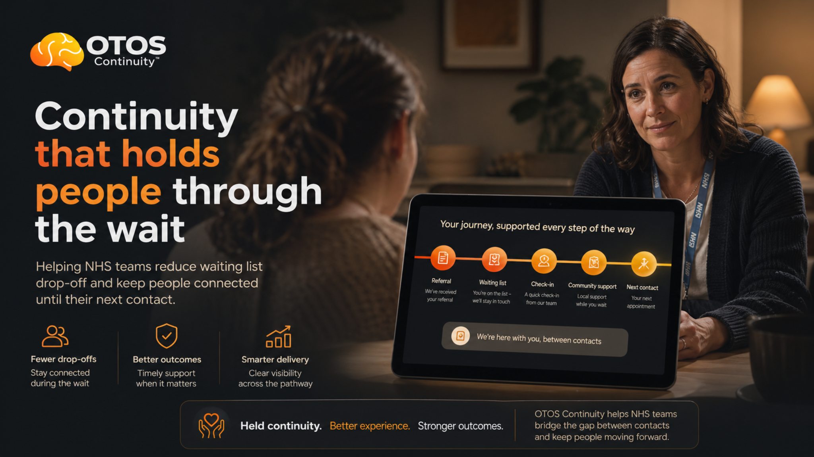

For the ADHD Team
Total clinical direction remains with you. OTOS only asks whether the waiting-period thread can be made visible before people arrive cold.
I am still on the CPFT ADHD waiting list. I am not asking OTOS to define the ADHD route, diagnose, prescribe or direct pathway decisions. I am asking whether suspected ADHD can be held visibly and safely while the ADHD team tells us what the right route should be.

"I've been briefed on OTOS Continuity™ — a non-clinical continuity layer for adults where suspected ADHD, addiction and service drift overlap. I understand OTOS does not diagnose, prescribe, triage clinically or direct ADHD pathway decisions. I would be willing to explore a bounded scoping conversation about whether suspected ADHD can be made visible, receipted and safely held while the ADHD team advises on the appropriate route."
Edit as you see fit. Two minutes to send. No commitment beyond the note.
Send this note →Total clinical direction remains with you. OTOS only asks whether the waiting-period thread can be made visible before people arrive cold.
OTOS does not decide shared care. It makes the route, handoff and ownership question visible enough that the person is not carrying it alone.
If suspected ADHD is seen first in addiction or recovery support, the next step can be logged without asking those teams to diagnose.
My own pathway shows the gap clearly. I had a previous private ADHD diagnosis, previous NHS shared-care prescribing, later reassessment, a medication change, and a current clinical update letter asking CPFT to help me continue effective treatment through the NHS route.
The letter is not being used to blame a GP practice or force a prescribing decision. It shows the operational problem OTOS is built around: when diagnosis, medication review, shared care, waiting lists and pathway ownership sit behind different doors, the person is left holding the thread.
OTOS would not solve shared care. It would make the next-step question visible: who owns the route, what has been requested, what is pending, what has been declined, and what human decision is needed next.
Psymplicity's April 2026 clinical update confirms Adult ADHD, Elvanse 60mg, previous shared-care history, and the request for support accessing effective treatment more affordably and efficiently through NHS care.
OTOS keeps suspected ADHD visible while the right pathway is agreed. It does not create a clinical record, automate triage, replace assessment, or bypass the ADHD team.
If CGL, CRS, GP, WorkWell, Mind or another partner suspects ADHD, the next-step question can be logged as a continuity action rather than disappearing into memory.
Waiting is not neutral for this cohort. OTOS can keep light contact and visible continuity around the person until the clinically appropriate route is confirmed.
Where shared care, medication review or prescribing responsibility is unclear, OTOS can show the handoff status without telling any clinician what to decide.
OTOS does not triage clinically. It surfaces agreed continuity signals so the right human team can decide the next step.
Partners see continuity status and handoff receipts, not each other's clinical notes. One thread, governed visibility, no merged clinical record.
Where ADHD may be driving repeat alcohol or drug harm, OTOS keeps the link visible without asking addiction or community teams to become ADHD assessors.
Repeated drift, missed handoffs, crisis contacts and unresolved next steps can be shown as a pattern for review — not as an automatic escalation.
I have already had contact with the ADHD service and understand that my case and the OTOS idea can be put in front of the right team/service leadership. I have held back from sending the Psymplicity letter until the moment it could support a clearer, safer conversation.
The ask is not: please endorse OTOS. The ask is: please help define what a safe, bounded continuity signal could look like for adults already visible to addiction, GP, crisis and community services where suspected ADHD may be driving repeated harm.
Can a non-clinical continuity layer reduce silent disengagement and make suspected ADHD next steps more visible in a small, governed 12-week pre-pilot?
A named person to advise what language, boundaries and workflow would be safe to test with addiction, GP and community partners.
Agree what continuity signals are appropriate: suspected ADHD noted, next step pending, handoff receipted, waiting-list status, or human review needed.
Map where suspected ADHD currently disappears and decide whether OTOS is worth testing as a safe non-clinical continuity layer.
One note. One conversation. That is all it takes to start.